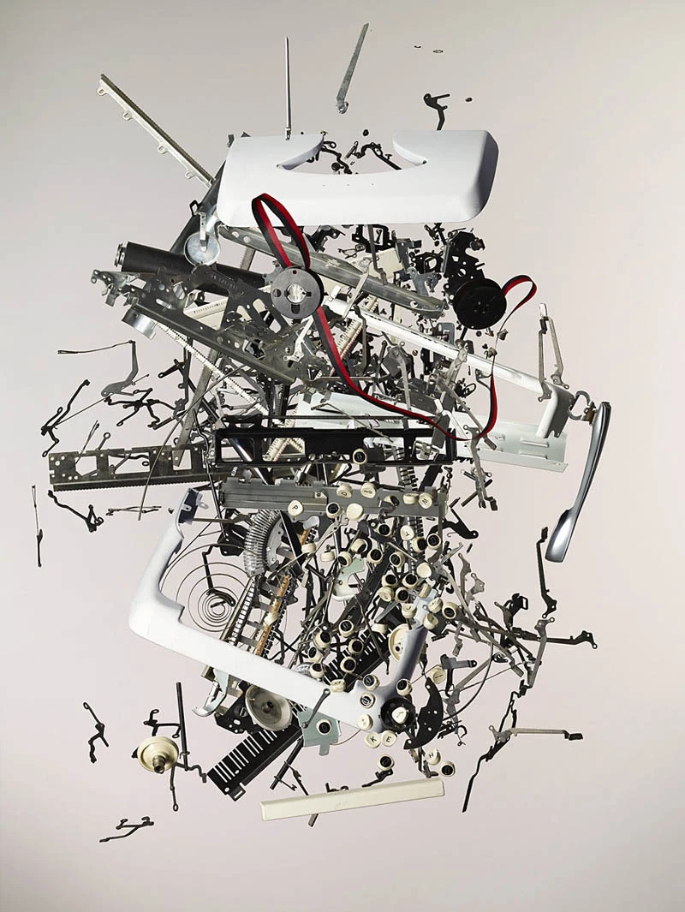
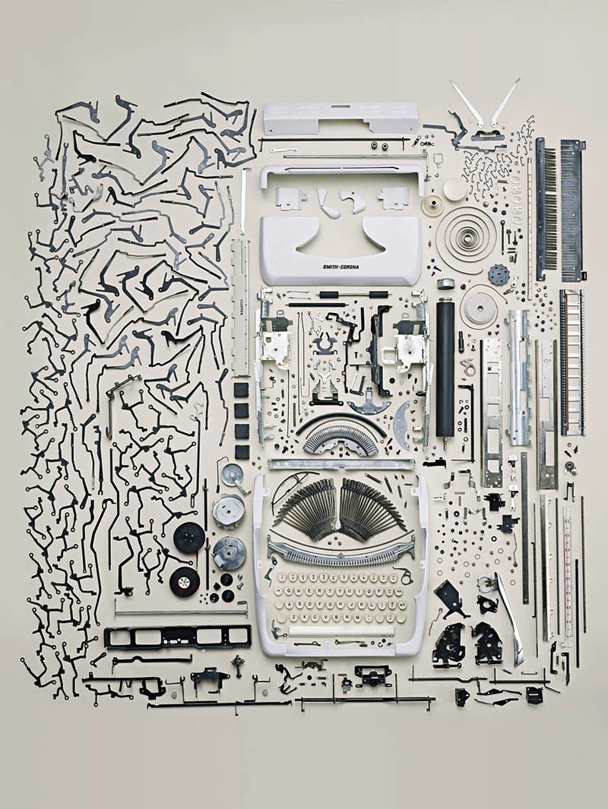

01
무엇을 찍나
사물의 앞면보다 뒷면, 연결부, 덧댐, 임시 고정, 낡음과 새것이 만나는 지점을 찍으세요.
이번 과제는 도시를 “예쁜 풍경”이나 “데이터로 정리된 시스템”으로만 보지 않고, 실제로 그 장소를 버티게 하는 표면, 수리, 시간의 층위, 그리고 몸의 감각을 읽어내는 연습입니다. 아래 세 글에서 가져온 번역 발췌와 사진을 먼저 읽고, 그다음 자신이 걸을 장소를 떠올려 보세요.
아래 네 가지를 기억하면 과제 방향이 훨씬 선명해집니다. 이번 과제는 관광 사진이나 일기장이 아니라, 도시의 작동 방식과 감각을 읽는 짧은 현장 비평입니다.
사물의 앞면보다 뒷면, 연결부, 덧댐, 임시 고정, 낡음과 새것이 만나는 지점을 찍으세요.
장소 묘사만 하지 말고, 그 장면이 기술·유지보수·시간·권력·감각과 어떻게 연결되는지 써야 합니다.
이론을 길게 요약하기보다, 읽은 개념을 현장에 적용해 자기 관찰을 해석하는 쪽이 더 중요합니다.
아래 세 글에서 마음에 남는 문장과 이미지를 하나씩 골라, 자신의 도시 관찰로 옮겨보세요.
Mattern은 도시를 유지시키는 것은 혁신의 반짝임이 아니라, 고치고 닦고 메우고 연결하는 반복적 노동이라고 말합니다.
이 글은 “세계가 어떻게 무너지고 있는가”보다 “세계가 어떻게 다시 조립되는가”를 보라고 요구합니다. 도시를 읽을 때도 마찬가지입니다. 우리가 보는 표면 뒤에는 언제나 누군가의 수리, 청소, 관리, 보수의 노동이 있습니다.


이 글에서는 다양한 학문적 접근 방식이 네 가지 규모의 유지 관리 영역에서 어떻게 수렴하는지 보여주고자 합니다. “녹” 영역에서는 교통 시스템부터 소셜 네트워크에 이르기까지 대규모 도시 기반 시설의 복구를 살펴봅니다. “먼지” 영역에서는 건축물 유지 관리와 더불어 가사 노동 및 가정과 실내 공간에서의 기타 관리 활동을 고찰합니다. “균열” 영역에서는 텔레비전, 지하철 표지판, 휴대전화 등 다양한 사물의 복구를 연구합니다. 마지막으로 “부패” 영역에서는 디지털 사물, 네트워크화된 건축물, 그리고 지능형 도시의 작동을 뒷받침하는 자원인 데이터를 정리하고 유지 관리하는 큐레이터들을 살펴봅니다.
녹: 도시 수리
미국 토목학회(American Society of Civil Engineers)는 4년마다 “인프라 보고서”를 발표하는데, 이는 어김없이 공공 시설물의 열악한 상태에 대한 헤드라인을 장식합니다. 2017년 미국은 전반적으로 실망스럽지만 놀랍지는 않은 D+ 등급을 받았습니다. 상수도 시스템은 D 등급(매일 60억 갤런의 정수된 물이 낭비됨), 댐은 D 등급(17%가 매우 위험함), 도로는 D 등급(5마일 중 1마일은 상태가 불량함)을 받았습니다. 대중교통은 D- 등급을 받았는데, 이는 부분적으로 900억 달러에 달하는 유지보수 사업 적체 때문입니다.
왜 이렇게 방치되었을까요? 브루킹스 연구소가 주최한 포럼에서 경제학자 래리 서머스는 “모든 관련 주체들의 모든 유인책은 유지보수에 반대하는 방향으로 작용합니다. 아무도 유지보수 사업의 이름을 언급하지 않았고, 유지보수 사업에 대한 공로를 인정받은 사람도 없었으며, 재임 기간 동안 유지보수를 미룬 것에 대해 비난받은 사람도 거의 없었습니다”라고 말합니다. 에드워드 글레이저도 여기에 동의하며, “새로운 프로젝트에 대해서는 언론의 주목을 많이 받습니다. 학교의 냉난방 시스템을 유지 보수하는 일은 사회적으로 훨씬 더 가치 있는 일임에도 불구하고 언론의 주목을 많이 받지 못합니다”라고 말합니다.
하지만 이러한 거시경제적 관점은 세상이 매일 우리 주변에서 끊임없이 보수되고 있다는 현실을 가립니다. 창문 청소부는 거리 위 높은 곳에서, 케이블 설치자는 아래에서 작업합니다. 교량 도색공들은 염분과 배기가스 속에서 고군분투합니다. 스리프트는 “현대 도시 거주자들은 끊임없는 보수와 유지 보수의 소음에 둘러싸여 있다”고 지적합니다. 우리는 공압 드릴의 윙윙거리는 소리, 거리 청소차의 웅웅거리는 소리, 도시 외곽 지역에서는 자동차 수리와 폐기물 처리 작업의 덜컹거리는 소리와 유압 장치의 쉬익거리는 소리를 듣습니다. 심지어 빈터에 새 건물이 들어서는 건설 현장의 소음조차도 보수의 신호일 수 있습니다. 도시 계획가 더글러스 켈바우는 도심 재개발을 도시 구조의 보수로 생각하자고 제안합니다.
한편, 간병인, 치료사, 성직자, 사회복지사 및 기타 사회복지사들은 도시의 사회 기반 시설을 돌봅니다. 사회학자 톰 홀과 로빈 제임스 스미스는 이러한 “돌봄 제공자”들을 “도시의 친절”의 도구로 보지만, 돌봄과 이타주의를 혼동하는 것은 경계해야 합니다. 지리학자 제시카 반스는 유지 관리 연구의 부활에 내재된 낭만주의를 경고합니다. 학자들은 저평가되었던 특정 유형의 노동을 부각시키고 수리를 소비 및 낭비와 대립되는 개념으로 규정해 왔지만, 특히 탈산업화된 서구 사회 밖의 많은 환경에서는 도시 및 생태 유지 관리의 동기가 훨씬 더 복잡합니다.
전 세계적으로 많은 공식적인 사회기반시설은 식민주의의 산물이며, 제국주의 유산은 세계적인 금융을 통해 지속되고 있습니다. 세계은행과 IMF가 자금을 지원하는 “재건” 노력은 방치된 유지보수 비용을 “신규 건설” 프로젝트를 통해 자본화하려는 경향을 반영합니다. 따라서 유지보수는 시장이나 자원에 대한 접근을 개방하거나 보호하려는 계획과 얽혀 있습니다. 일부 개발 프로젝트는 지역 주민의 저항이나 행정 문제로 인해 지연되고, 다른 프로젝트는 소외되고 권리를 박탈당한 사람들을 사회기반시설에서 배제합니다.
사회기반시설이 없거나 신뢰할 수 없는 곳에서는 불법 수도꼭지, 무단 접합 케이블, 해적 라디오 방송국, 뒷마당 우물, 암시장 네트워크 등으로 그 공백이 메워집니다. 많은 지역에는 쿠바의 지하 시장인 ‘엘 파케테 세마날(el paquete semanal)’처럼 독특한 “복구 생태계”가 존재합니다. 이는 국가의 불안정한 인터넷을 우회하기 위해 하드 드라이브를 통해 오프라인으로 유통되는 새로운 디지털 콘텐츠의 주간 공급분입니다. 이것 또한 일종의 유지보수입니다. Graham과 Thrift는 글로벌 사우스에서 “도시 생활의 기술사회적 구조 자체가 거대한 수리 및 즉흥 시스템에 의해 크게 지배되고 구성된다”고 주장합니다.
외부인들은 때때로 녹슨 다리와 부서진 파이프, 즉 “결함 있는 대상” 자체에만 초점을 맞추는 실수를 범하지만, 현지 관계자들은 그러한 대상들이 내재된 사회적, 정치적 관계에 더 관심을 기울입니다. 바네스는 나일강 유역의 이집트 농부들이 관개 수로를 관리하는 이유가 단순히 물의 흐름을 유지하기 위해서만이 아니라 다른 농부들과의 공동체적 유대를 유지하기 위해서라고 보고합니다. 니킬 아난드의 『수력 도시』에서도 비슷한 양상이 나타납니다. 우리는 항상 무엇을 유지 관리하는 것인지 질문해야 합니다. 유지 관리의 대상은 사물 자체일 수도 있고, 그것을 둘러싼 협상된 질서일 수도 있으며, 더 큰 체계 전체일 수도 있습니다.
관점을 바꿔보면, 망가진 시스템의 다중적 특성이 어떻게 복구를 방해하는지도 볼 수 있습니다. 뉴욕 지하철을 예로 들면, 빌 드블라시오 뉴욕 시장과 앤드류 쿠오모 뉴욕 주지사는 지하철 시스템의 문제를 해결할 책임이 시에 있는지 주에 있는지를 두고 수년간 논쟁을 벌여왔습니다. 아무도 비용을 부담하려 하지 않는 사이, 세계적인 교통 시스템 중 하나가 제대로 관리되지 못하고 있습니다. 역사학자 스콧 가브리엘 놀스는 공공 기반 시설의 “유지보수 연기”를 소외되고 제대로 서비스를 받지 못하는 사람들의 억압을 지속시키는 느린 재앙으로 보아야 한다고 주장합니다. 그런데도 우리는 여전히 만원인 7호선을 기다리고 있습니다.
균열: 물체 수정
《하우스라이프》에서 걸레, 걸레자루, 수영장 스키머는 건물과의 상호작용을 매개하는 도구들입니다. 그러나 루스 슈워츠 코완이 지적했듯이, 가사 노동은 점점 더 “작업자가 직접 만들거나 이해할 수 없는 도구를 사용하여 수행”되고 있습니다. 진공청소기나 세탁기 같은 유지 관리 기계조차 전문적인 수리가 필요한 경우가 많습니다. 사무실에서도 마찬가지로, 직원들은 복사기 기술자나 IT 직원의 전문 지식에 의존합니다. 우리는 고장 난 물건에 대해 수리, 고치기, 복원, 보존, 청소, 재활용, 관리 등 다양한 행동을 할 수 있지만, 이러한 물건들은 건축물과 마찬가지로 “관리 가능성과 수용 능력”이 제각각입니다.
오늘날 세탁기나 냉장고를 직접 고치는 사람은 거의 없지만, 과거에는 그렇지 않았습니다. 미국의 국립 농과대학들은 오랫동안 농업 및 가사 노동에 대한 실용적인 교육을 제공해 왔고, 여기에는 기술 숙달과 유지 보수에 중점을 둔 프로그램도 포함되어 있었습니다. 1929년 아이오와 주립대학은 가정 기기 학부 전공을 개설해 여학생들에게 세탁의 화학과 물리학, 식품 과학, 아동 발달, 가정 관리, 가정 경제, 전자공학 등을 가르쳤습니다. 학생들은 기계의 구조, 작동, 수리에 대한 세부 사항을 이해하기 위해 직접 분해하고 재조립해야 했습니다. 이러한 실습은 주방 기기에 대한 적극적인 책임을 자신 있게 받아들이는 자립적인 주부를 길러내기 위한 것이었습니다.
20세기 중반, 여성들은 거실의 기기들과 또 다른 관계를 맺고 있었습니다. 기기의 기계적·전기적 작동 방식과 설치, 수리에 관한 기술적 지식은 “집 밖에서 얻는 것”이었습니다. 미디어 학자 리사 파크스는 TV 수리공의 방문이 유지보수와 관련된 성별 역할을 강화하는 동시에 뒤집기도 했다고 설명합니다. 수리공이 집 안으로 들어오면서 가족 내 권위에 균열이 생기고, 여성 소비자들이 텔레비전의 더 복잡한 측면과 자신만의 방식으로 접촉할 기회가 생겼다는 것입니다. 하지만 오늘날 스마트 기술이 가정에 더 깊이 들어오면서 이런 접촉의 기회는 줄어들고, 고장이 나면 현장 수리공과 원격 콜센터 기술자가 모두 관여하는 복잡한 시스템 진단이 필요해질 수 있습니다.


고장 난 노트북과 알렉사는 어떻게 될까요? 벼룩시장이나 중고품 가게에서는 오래된 라디오나 영사기를 여전히 볼 수 있지만, 중고 아이폰은 거의 보기 어렵습니다. 어떤 전자기기는 수리되어 재판매되고, 어떤 것은 고철로 분해됩니다. 사회학자 제나 버렐은 가나 아크라의 인터넷 카페를 묘사하며, 그곳에서 청소년들이 북미와 유럽의 학교와 사무실에서 버려진 오래된 컴퓨터로 채팅하고 게임을 한다고 설명합니다. 서구 언론은 흔히 가나를 전자 폐기물 처리라는 “음침한 산업”의 중심지로 묘사하지만, 버렐은 이를 기술 역량을 발전시킬 기회를 가진 노동자들의 기업가적 수리 및 중고 거래 네트워크로 봅니다.
이 기계들이 가나의 카페나 가정에서 두 번째 삶을 마치면 도시로 옮겨져 고철 수집가, 가공업자, 상인들에 의해 구리, 알루미늄, 철, 회로 기판 등으로 분해됩니다. 이러한 변형은 대개 도시의 변두리에서 일어나고, 심각한 건강 위험을 낳습니다. 그 뒤 구성 부품들은 일부는 국내에서, 일부는 나이지리아나 중국으로 재분배되어 새로운 물건으로 다시 조립됩니다. 버렐은 이러한 “분배, 수리, 폐기의 생태계”가 “결핍으로 특징지어지는 일상적인 장소에서의 삶의 현실”이라고 말합니다.
Parks는 잠비아 루사카의 도시 거리에서 펼쳐지는 공개적인 수리 행위를 묘사합니다. 야외 작업장에서 수리는 사물의 사용 가치를 연장할 뿐 아니라 사회적 상호작용의 메커니즘이 됩니다. 사람들은 주위에 모여 구경하고 이야기를 나눕니다. 작업장은 공공 교육의 공간이자 수술실 같은 곳이 되며, 수리공은 기기를 분해하고 기술을 시연하고, 구경꾼들에게 고장 난 물건을 버리는 대신 고쳐 쓰도록 격려합니다. 수리의 집단성은 일종의 사회적 기반 시설을 형성합니다.
이런 지혜가 오직 개발도상국에서만 나오는 것은 아닙니다. 영국 남서부의 수리점들, 파리 지하철의 표지판 수리, 소비자의 전자기기 “수리권” 논쟁, iFixit 같은 위키, Restart Project의 수리 파티, 공공 도서관의 “U-Fix-It” 클리닉과 수리 카페, 브라질의 gambiarra 같은 임시 수선 실천까지 모두 연결됩니다. 다만 이러한 사례를 서구 디자인 문화가 차용하거나 낭만화할 때는 주의가 필요합니다. 수리의 미학이 생존 전략의 낭만화로 변할 수 있고, 경제적 불안정의 영속화를 정당화하는 데 쓰일 수도 있기 때문입니다.
이 글은 유지보수를 단순한 보수 작업이 아니라, 도시 인프라, 돌봄 노동, 사물 수리, 데이터 관리까지 이어지는 넓은 영역으로 보여 줍니다. 사진을 볼 때도 망가진 표면만 보지 말고, 그것을 누가 어떤 방식으로 계속 작동하게 만들고 있는지, 그리고 그 과정이 어떤 사회적 관계와 불평등을 드러내는지 함께 읽어 보세요.
Milligan은 풍경과 인프라가 단순한 배경이 아니라, 자연과 인간의 시간을 빠르게 하거나 늦추는 장치라고 설명합니다.
이 글에서 중요한 질문은 “이 장소는 무엇을 빠르게 만들고, 무엇을 느리게 만드는가?”입니다. 길, 제방, 수로, 산책로, 재개발 구역은 모두 시간을 조직하는 장치로 읽힐 수 있습니다.


1984년, 풍경과 문화의 관계를 오랫동안 연구해 온 역사학자이자 비평가 J. B. Jackson은 자신의 연구 대상을 새롭게 정의했습니다. 그에 따르면 풍경은 “자연의 과정을 빠르게 하거나 늦추기 위해 의도적으로 만들어진 공간”입니다. 그는 네덜란드, 펜스, 포 강 유역처럼 극적으로 간척된 땅을 예로 들었지만, 더 흔한 일상적 장면까지 함께 가리키고 있었습니다. Jackson의 향토적 풍경 연구에서 길을 포장하거나 밭을 가는 사람은 누구나 일종의 시간 마법에 관여하고 있습니다. 인간은 환경에 개입하고, “인간의 필요를 위해 공간을 재조직”하면서, 스스로 “시간의 역할”을 맡게 됩니다.
이제 그런 공간은 전 세계를 포괄합니다. 몇 세대의 인간 시간 동안, 우리 행성 지하에 묻혀 있던 생물학적 조상의 잔해, 즉 이른바 화석연료가 급속히 연소되면서 막대한 양의 탄소가 대기 중으로 이동했고, 그 결과 어디서나 생명 조건이 급격하게 변했습니다. 기후위기, 대가속, 여섯 번째 대멸종이라는 이름은 믿기 어려울 만큼 빠르고 복잡한 풍경 변화의 이름이기도 합니다. 이 변화는 생물학적, 지질학적, 물질적, 사회적, 기술적, 정치적 요소들이 얽힌 수많은 집합 속에서 일어납니다. 인간은 모든 규모에서 풍경 과정에 개입하며, 의도적으로든 아니든, 능숙하게든 무심하게든, 어떤 것은 빠르게 하고 어떤 것은 늦추면서, 자기 통제를 훨씬 넘어서는 연쇄 효과를 만들어 냅니다.
어떤 의미에서 우리는 시간 자체를 다시 빚어 놓은 셈입니다. 시간은 우리의 공간적 인프라 실천의 함수가 되었습니다. 우리가 문자 그대로 “시간의 역할”을 할 수는 없더라도, 시간의 리듬과 주기를 바꾸고 물질의 흐름을 안무하듯 조직하면서 시간을 속이려 합니다. 그러나 속는 쪽은 오히려 우리입니다. 세계는 알려진 존재와 알려지지 않은 존재들, 즉 설계 의도에 종속되지 않는 수많은 행위자들로 가득 차 있기 때문입니다.
만약 풍경 과정을 빠르게 하고 늦추는 일이 우리 시대의 설계 과제라면, 지금 우리에게는 더 나은 개념 도구와 실천 방식이 필요합니다. Milligan은 이 개념을 이해하기 위해 먼저 북부 캘리포니아의 한 하천과 그 유역으로 독자를 데려갑니다.
Lower Alameda Creek, 더 정확히 말하면 Alameda Creek Flood Control Channel은 Diablo 산맥의 Niles Canyon에서 시작해 교외 주거 지역과 버려진 소금 생산 연못을 지나 San Francisco Bay로 흘러갑니다. 이 지역의 많은 하천들처럼 Alameda Creek 역시 1960년대 미국 육군 공병대에 의해 재편되었습니다. East Bay 전역에서 개발되던 교외 주택지를 홍수로부터 보호하기 위해서였습니다. 이곳에서 하천은 최대 폭 520피트, 깊이 26피트에 이르는 사다리꼴 도랑 안에 가두어졌고, 양쪽은 돌과 흙으로 보강된 제방으로 둘러싸였습니다. 모든 것은 “표준 사업 홍수” 수용 능력 기준을 맞추기 위한 설계였습니다.
그런데 Alameda 수로는 거의 만들어지자마자 문제를 드러냈습니다. 수로가 너무 넓고 너무 얕아서, 하천의 퇴적물을 Bay까지 운반할 수 없었던 것입니다. 이 오산은 단지 퇴적량 계산의 문제가 아니었습니다. 더 깊은 문제는 개념적이었고, 식민주의적 이데올로기에서 비롯되었습니다. 범람원은 본래 역동적입니다. 그대로 두었다면 Alameda Creek은 Niles Cone의 선상지에 퇴적물을 쌓고, 홍수가 몰려올 때마다 물길을 이동시켜 Bay를 향한 새로운 경로를 찾았을 것입니다.
그러나 공병대는 건설을 위해 그 평야에서 홍수를 제거하려 했고, 정지, 예측 가능성, 통제라는 가정에 기초한 추상적 분석에 의존했습니다. 주변 환경과 단절된 지금의 하천은 퇴적물을 수로 안에 쏟아 놓고, 더 이상 스스로 새로운 출구를 파낼 수도 없습니다. 그래서 인간과 기계가 대신 그 일을 해야 합니다. 이곳에서는 평균적으로 매년 7만 5천 입방야드의 물질이 준설됩니다. 한때는 효율적인 풍경 배치처럼 보였던 것이, 실제로는 매우 값비싼 체계로 드러난 것입니다.
이제 Alameda Creek을 또 다른 시각에서 생각해 봅시다. 19세기 말과 20세기 초, Bay Area에 정착한 유럽계 이주민들은 지류를 직선화하고, 천정우물과 펌핑 우물을 파면서 지하수 수위를 점점 더 빠른 속도로 낮추었습니다. 이는 보통 과잉 개발이나 가뭄의 결과로 설명되는 전형적 환경 문제입니다. 그러나 동시에, 이전의 조합과 어긋난 속도로 움직이기 시작한 풍경으로도 이해할 수 있습니다. 1960년대에 이르러 증가한 펌핑은 진공 상태를 만들었고, 그 결과 Bay의 짠 지하수가 담수 대수층 안으로 빨려 들어와 이를 오염시켰습니다.
역사적으로 Alameda Creek은 Diablo 구릉에서 빠져나온 직후 Niles Cone 상부에 자갈과 조약돌 같은 거친 퇴적물을 쌓았습니다. 정착민들은 이 자갈을 도로와 건물용 지반을 만들기 위해 채굴했고, 그 결과 하천 양옆에는 커다란 채석장 구덩이가 남았습니다. 오늘날 Alameda Creek Flood Control Channel은 바로 이 흔적들을 관통해 흐릅니다. 수로가 건설되었을 때, 이 오래된 채석장은 지하수 염분 문제를 해결할 수 있는 편리한 장치가 되었습니다.
엔지니어들은 수로 전체 폭을 가로지르는 팽창식 고무 댐을 설치해 물을 채석장 쪽으로 돌렸고, 그 구덩이들은 저수지가 되었습니다. 이렇게 하천의 속도를 늦추면 담수는 다공성 지층을 통해 아래로 스며들어 대수층을 채울 수 있었고, 염분은 다시 Bay 가장자리 쪽으로 밀려났으며, 추출 우물을 통해 추가 관리될 수 있었습니다. 다시 말해, 같은 하천이 이번에는 ‘감속’됨으로써 다른 문제를 해결하는 장치가 된 것입니다.
이 모든 운영은 오늘날 Alameda County Water District에 의해 실시간으로 모델링되고, 매개변수화되고, 감시됩니다. 그러나 이 기술에는 분명한 대가가 따릅니다. 염분 침투를 밀어내는 데 사용된 물은 하천 하류로 흐르지 않습니다. 그 결과 수생 생물과 수변 서식지를 유지할 물이 줄어들고, 퇴적물을 Bay까지 운반할 흐름도 약해집니다. 이를 보완하기 위해 지역 수자원 기관은 California State Water Project에서 추가 공급량을 구매합니다. Central Valley 전체와 Sierra Nevada 상류까지 뻗어 있는 이 거대한 수송 인프라를 통해, 매우 추상적인 물 시장 메커니즘으로 Alameda Creek 상류 지류에 물이 추가됩니다.
이 글에서는 같은 장소가 어떤 흐름은 빠르게 하고 어떤 흐름은 늦추는 방식으로 읽힙니다. 수로, 제방, 준설, 채석장, 댐, 대수층이 서로 어떻게 연결되는지 보면서, 한 문제를 해결하기 위한 개입이 또 다른 비용과 조정을 불러오는 과정을 따라가 보세요.
Folarin은 도시를 객관적 배경이 아니라, 한 사람이 욕망과 불안, 문화적 어색함, 가능성을 겪는 감각의 장면으로 씁니다.
이 글은 도시를 바라보는 시선을 바꿔 줍니다. 도시의 건물이나 제도만이 아니라, 그 도시가 한 사람에게 어떤 리듬과 감정을 만들어내는지까지 읽어야 한다는 점을 보여줍니다.


Folarin의 글은 도시를 객관적 공간으로 설명하는 대신, 한 사람이 도시의 크기와 리듬을 몸으로 어떻게 감당하는지를 보여 줍니다. 그는 애틀랜타에서 워싱턴 D.C.로 이동한 뒤, 같은 미국 도시인데도 전혀 다른 감각을 경험합니다. 애틀랜타는 낯설더라도 이해 가능한 크기의 도시였지만, D.C.는 처음부터 차갑고 과장되게 느껴집니다. 친구를 따라 국회의사당, 백악관, 링컨 기념관 같은 장소를 둘러보지만, 그 유명한 건물들은 웅장함보다 비현실성으로 다가옵니다. 너무 많은 영화와 뉴스와 교과서 속 이미지로 먼저 접했던 장소라서, 실제 눈앞의 풍경이 오히려 더 가짜처럼 느껴지는 것입니다.
이 대목은 도시를 읽을 때 아주 중요합니다. 우리는 흔히 랜드마크가 그 도시의 본질을 보여 준다고 생각하지만, Folarin은 바로 그 랜드마크가 너무 많은 이미지로 선행되어 있었기 때문에 현실의 경험을 방해할 수도 있다고 말하는 셈입니다. 눈앞의 건물을 보는 일이 단순한 시각 경험이 아니라, 이미 머릿속에 들어와 있던 수많은 이미지와 충돌하는 경험이 되는 것입니다. 그래서 어떤 장소를 처음 봤을 때 왜 낯설었는지, 왜 오히려 조작된 세트장처럼 느껴졌는지를 쓰는 것은 매우 중요한 관찰이 됩니다.
글의 또 다른 축은 도시를 견딜 수 있는 크기로 줄여 가는 과정입니다. Folarin은 며칠이 지나고 나서야 자신이 큰 도시를 자연스럽게 다루는 사람이 아니라는 사실을 인정합니다. 그리고 도시에 대한 거대한 인상을 그대로 떠안는 대신, 아주 구체적인 일과를 만들어 스스로를 안정시킵니다. 아침에는 하워드 대학교 기숙사에서 나와 Shaw/Howard University 역까지 걷고, 메트로를 타고 일터로 향하며, 밤에는 다시 돌아와 Florida와 Georgia 애비뉴 주변의 소리와 공기를 감각합니다. 이 반복되는 동선 덕분에 압도적인 수도가 비로소 생활 가능한 크기의 도시로 바뀝니다.
여기서 Founders Library 사진은 단순히 대학 건물 사진이 아닙니다. 그것은 도시 전체를 감당하기 어려운 한 사람이 자기 삶의 리듬을 걸어 두는 기준점으로 읽을 수 있습니다. 마찬가지로 Florida와 Georgia 교차로 역시 단순한 지명이 아니라, 밤마다 같은 음악과 소리와 기분이 쌓이는 감각의 장소가 됩니다. 학생 과제에서 이런 방식은 매우 중요합니다. 어떤 장소가 유명한가보다, 그 장소가 자기 일과 안에서 어떤 반복을 만들어 냈는지가 훨씬 더 강한 서술을 만듭니다.
도시는 내 바깥의 배경이 아니라, 나의 리듬과 감정을 다시 조직하는 환경이기도 하다.
Folarin의 글에는 영화관으로 달려가던 저녁, 지하철이 어둠 속을 빠져나오며 전혀 다른 종류의 어둠으로 옮겨 가던 순간, 비가 창문을 때리던 장면처럼 도시가 감각의 급격한 전환으로 기록되는 순간들이 자주 나옵니다. 이런 장면은 도시를 건물 목록이나 제도적 설명으로는 절대 전달할 수 없다는 점을 보여 줍니다. 사람은 공간을 평면적으로 사는 것이 아니라, 빛의 변화, 비의 압력, 지하와 지상의 감각 차이, 이동 중의 초조함, 늦었다는 불안, 도착 직전의 기대 같은 것들을 함께 겪으며 도시를 기억합니다.
그가 영화와 영화관 이야기를 오래 끌고 가는 것도 같은 이유에서 읽을 수 있습니다. 새로운 영화 운동을 좇아 다니던 청년의 감각, 아직 굳지 않은 새로운 가능성에 대한 기대, 외국 영화를 보기 위해 도시 안을 가로지르는 움직임은 모두 그가 D.C.를 체험하는 방식과 겹쳐집니다. 도시는 단지 배경이 아니라, 어떤 문화적 욕망을 추구하기 위해 몸을 움직이는 장치가 됩니다. 그래서 이 글에서는 도시의 물리적 장소와 개인의 지적 열망, 문화적 정체성이 동시에 하나의 리듬으로 묶입니다.
글을 따라가다 보면 D.C.는 하나의 통일된 도시가 아니라 여러 개의 분위기가 공존하는 장소로 나타납니다. 어떤 순간의 D.C.는 위압적이고 상징적인 국가 권력의 무대입니다. 또 다른 순간의 D.C.는 서류 가방을 든 사람들, 밝은 복도, 인턴십과 업무의 긴장으로 가득한 일터의 도시입니다. 다시 다른 순간에는 비어 있는 콘도, DVD 더미, 혼자 머무는 방의 침묵과 TV 화면의 깜빡임으로 기억되는 도시가 됩니다. 하나의 도시 안에 서로 다른 장르의 장면들이 포개져 있다는 점이 이 글의 힘입니다.
이 점은 학생이 도시를 쓸 때도 그대로 적용할 수 있습니다. 어떤 장소를 묘사할 때 “여기는 이런 기능을 하는 곳이다”라고 한 줄로 정의하면 글이 쉽게 죽습니다. 대신 같은 장소가 낮과 밤에 어떻게 다르게 느껴지는지, 사람들과 혼자 있을 때 어떻게 달라지는지, 머릿속 이미지와 실제 감각이 어떻게 충돌하는지를 기록해야 합니다. 예를 들어 낮에는 관광지처럼 보이는 장소가 밤에는 지나는 버스의 소음과 간판 불빛 때문에 전혀 다른 인상을 줄 수 있습니다. Folarin은 바로 그 변환을 놓치지 않습니다.
또한 그는 도시 적응이 단순히 익숙해지는 문제가 아니라, 자기만의 감각적 지도와 시간을 만드는 과정임을 보여 줍니다. 반복해서 지나가는 역, 교차로, 기숙사 복도, 일터 주변의 골목은 거대한 도시를 조각내어 손에 잡히는 단위로 바꿉니다. 그래서 한 사람이 도시를 사랑하거나 견디게 되는 방식은 기념비적 장소의 의미를 아는 것보다, 자기 몸이 안심할 수 있는 경로를 만드는 것과 더 관련이 있을 수 있습니다. 이 관점을 가져오면 평범한 역 출구나 횡단보도도 충분히 중요한 관찰 대상이 됩니다.
결국 Folarin의 글은 도시를 감정과 동선, 리듬과 기억의 총합으로 읽게 합니다. 도시는 이미 존재하는 외부 배경이 아니라, 한 사람이 통과하면서 새롭게 조율되는 환경입니다. 따라서 과제에서 학생은 장소를 설명하는 데서 멈추지 말고, 그 장소가 자신에게 어떤 속도를 강요했는지, 어떤 긴장이나 안정을 주었는지, 미디어 속 이미지와 현실이 어떻게 달랐는지까지 써야 합니다. 그러면 사진 속 거리와 건물은 단순한 풍경이 아니라 실제로 몸에 남은 도시 경험의 증거가 됩니다.
이 글에서는 장소와 감정이 함께 움직입니다. 같은 거리와 건물도 왜 위압적으로 느껴졌는지, 왜 어느 순간 익숙해졌는지, 반복되는 동선이 도시의 크기를 어떻게 바꾸는지에 주목해 읽어 보세요.
아래 원칙은 과제 작성 형식과 인용 표기에서 기본으로 따릅니다. 본문을 쓰기 전에 먼저 한 번 확인하세요.
모든 주는 각주로 처리하는 것을 원칙으로 하며, 별도의 참고문헌은 제시하지 않습니다. 서지사항 표기의 일반 형식은 아래를 따릅니다.
각주 표기는 아래 형식을 참고하면 됩니다.
ibid. 또는 같은 논문으로 처리합니다.op. cit. 또는 앞 논문으로 처리합니다.모든 인용문은 논리 전개상 불가피한 경우를 제외하고는 번역하는 것을 원칙으로 합니다.
표와 그림은 본문과 별도로 작성하고 일련번호를 붙이며, 출처는 아래에 제시합니다.
이 페이지를 다 읽고 나면, 어디를 걸을지와 무엇을 찍을지가 어느 정도 정리되어야 합니다. 마지막으로 제출 형식을 다시 확인하세요.
사진 3-5장을 포함한 A4 3페이지 내외의 짧은 에세이를 PDF로 제출합니다. 공백 포함 2,000자 이상을 권장합니다.
다음 주까지 계획서를 제출하면 1점 가산됩니다. 계획서는 200-300단어로, 자신이 어디서 무엇을 볼 예정인지 구체적으로 적어야 합니다.
| Grade | Score | What It Means |
|---|---|---|
| A | 30 | 사진과 글이 긴밀히 연결되고, 수업 개념을 자기 관찰 속에 설득력 있게 적용했다. 단순 묘사를 넘어서는 통찰이 있다. |
| B | 27 | 현장 기록은 성실하고 분석도 적절하지만, 개념 활용이 요약 수준에 머물거나 해석의 밀도가 다소 약하다. |
| C | 24 | 사진과 글은 연결되지만, 이론적 해석보다 감상문이나 산책기 비중이 높다. |
| D | 21 | 형식은 갖추었지만, 도시를 익숙한 일반론으로만 설명하고 유지보수·시간·감각의 층위를 충분히 읽어내지 못했다. |
| E | 18 | 제출은 했지만 과제의 핵심 질문을 충분히 이해하지 못했거나 내용이 매우 불성실하다. |